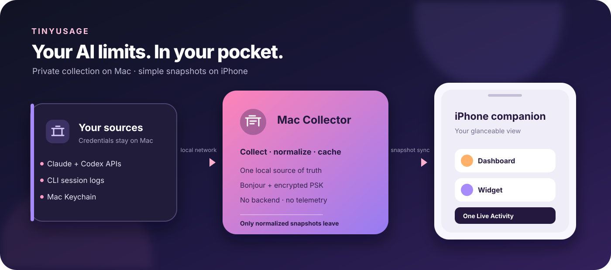

Private by default
No backend, CloudKit, analytics, or proprietary push. Credentials stay on the Mac.
TinyUsage pairs a macOS collector with an iPhone companion for a clear view of Claude and Codex quotas, official API usage, and local estimates.

No backend, CloudKit, analytics, or proprietary push. Credentials stay on the Mac.
Subscription, official API, and local estimates are never silently merged.
The iPhone, widget, and Live Activity show the last known snapshot when Bonjour is unavailable.
brew install xcodegen
make bootstrap
make testUnsigned simulator and macOS builds need no personal credentials. Device signing uses an ignored local xcconfig.
Architecture · Privacy · Security · Changelog